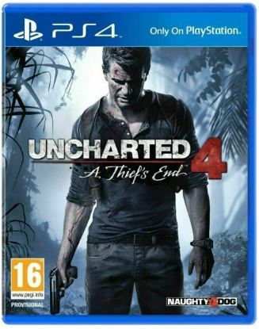
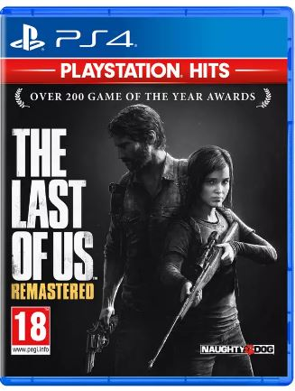
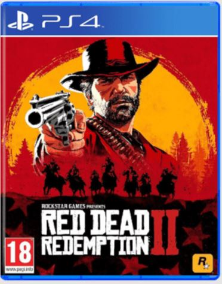
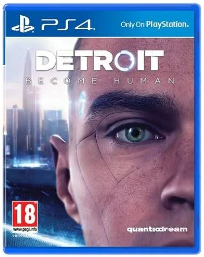

Curent Date and Time: .
I have dedicated a tribute page to the Sony PlayStation 4 Console. On this page you will find my favourite games and a description of them.
My Favourite Games

Uncharted 4: A Thief's End
2016 action-adventure game developed by Naughty Dog.
4th story game released after Uncharted 1-3.
Genres: Action-adventure game, Platform game, Third-person shooter, Stealth game
What I love most about it: The graphics, great variety of exotic places to play through, the storyline and gameplay.
Click here to watch the trailer

The Last of Us
2013 action-adventure game developed by Naughty Dog.
Story follows a young girl being escorted by a smuggler named Joel, in a post-apocalyptic world.
Genres: Action-adventure game, Survival horror, Stealth game
What I love most about it: It is thrilling and you find an unexpected father-daughter bond created between the two, which enriches the storyline.
Click here to watch the trailer

Red Dead Redemption 2
2018 action-adventuregame developed by Rockstar Games.
America, 1899. The end of the Wild West era has begun as lawmen hunt down the last remaining outlaw gangs.
Genres: Open world, action-adventure
What I love most about it: The open world-endless opportunity to explore. Flexibility to follow a story or make your own. The historic detail.
Click here to watch the trailer

Detroit: Become Human
2018 adventure video game developed by Quantum Dream.
The game gives you contol of mankind's and androids' destiny in a near future, where machines have become more intelligent.
Genres: action-adventure
What I love most about it: The choices you make in the game, impacts the story and ending. Every individual's experience is unique.
Click here to watch the trailer